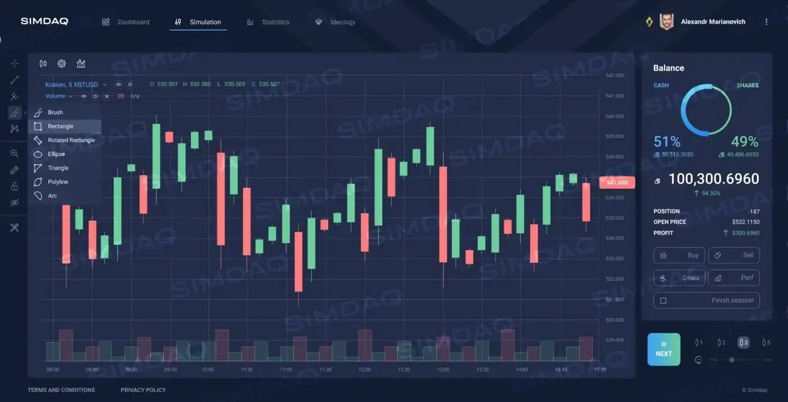

YouTube
SIMDAQ platform presentation

A demonstration of the SIMDAQ trading simulator.
My role
Product Management / Growth Operations: MVP, roadmap, gamification and international launch.
Open original ↗YouTube

A demonstration of the SIMDAQ trading simulator.
Product Management / Growth Operations: MVP, roadmap, gamification and international launch.
Open original ↗